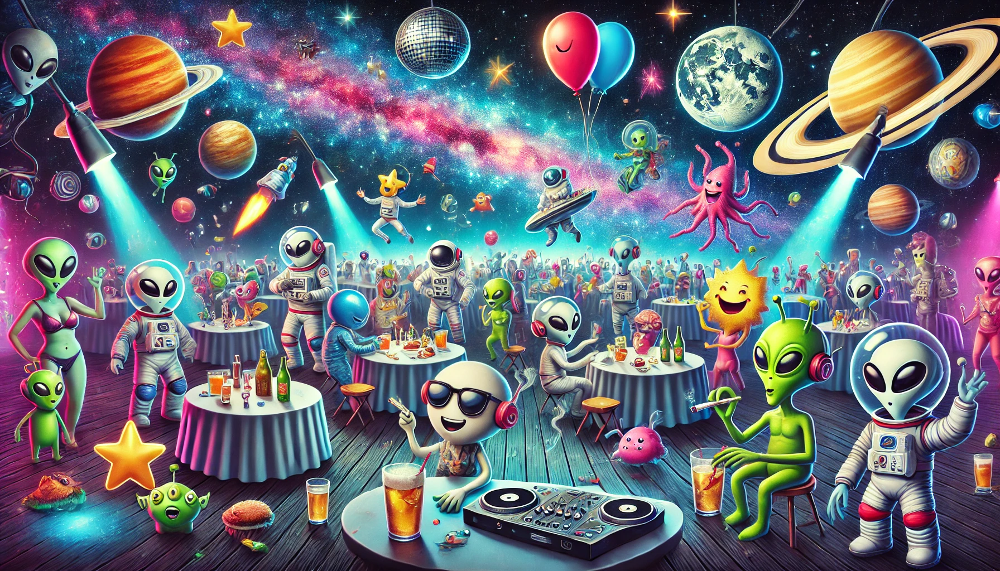
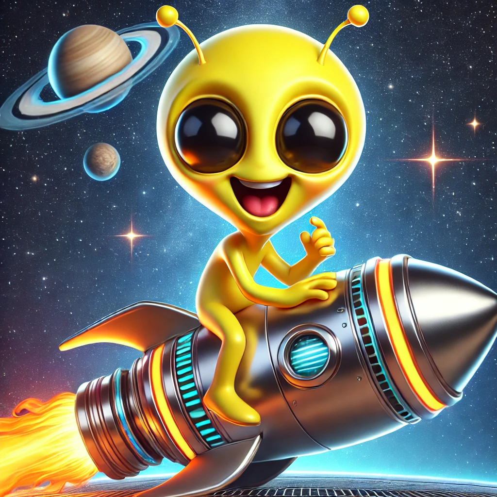
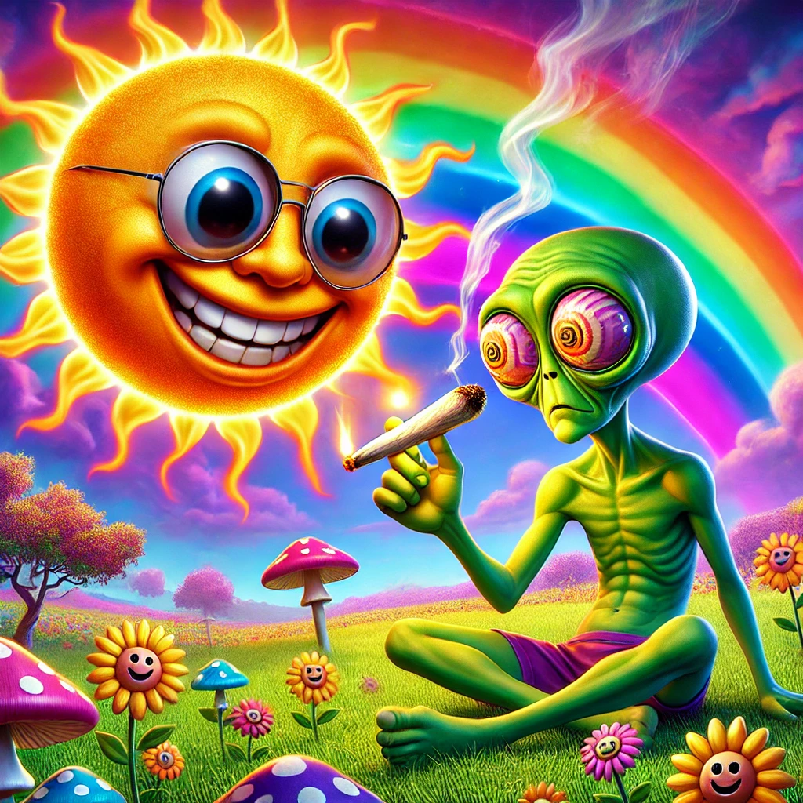
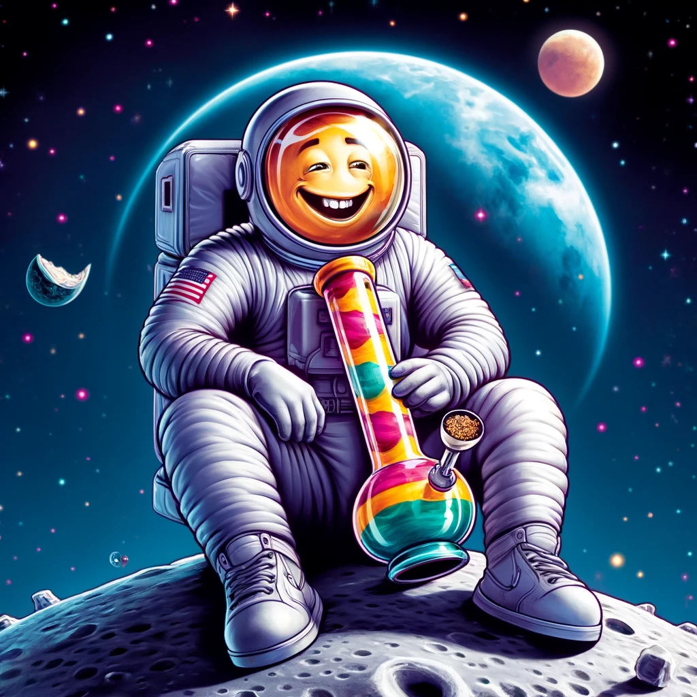
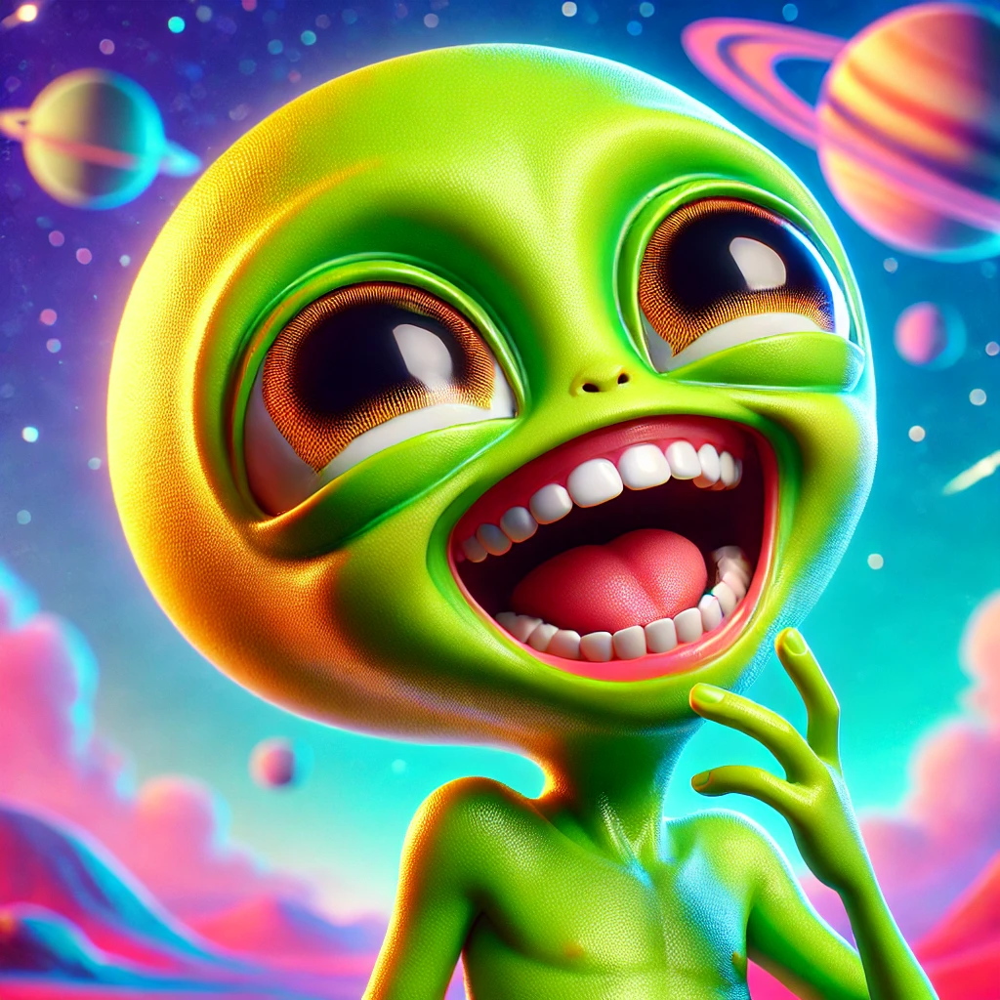
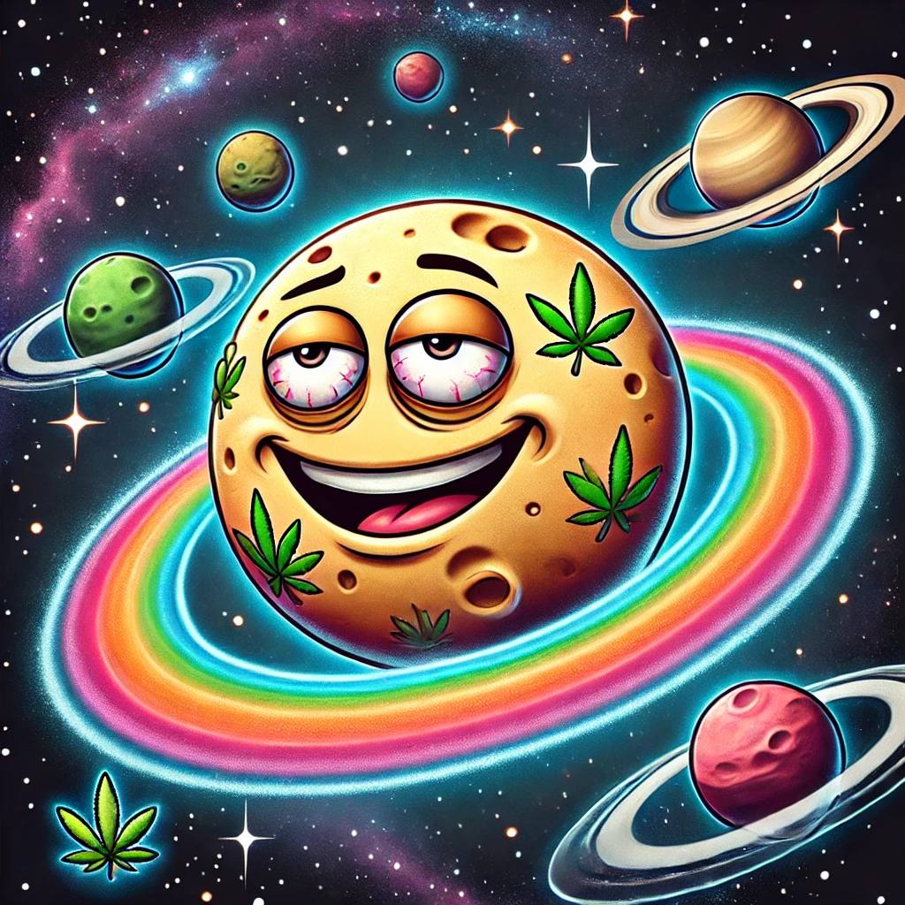
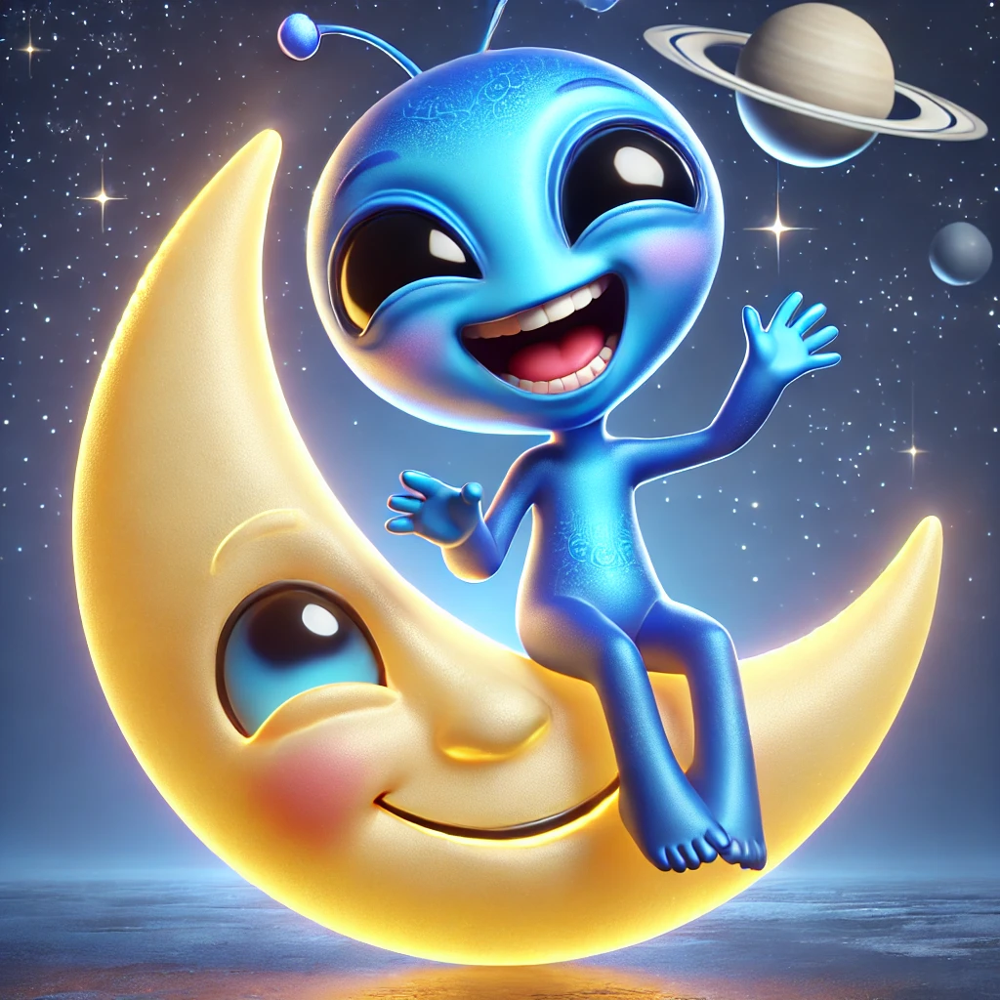
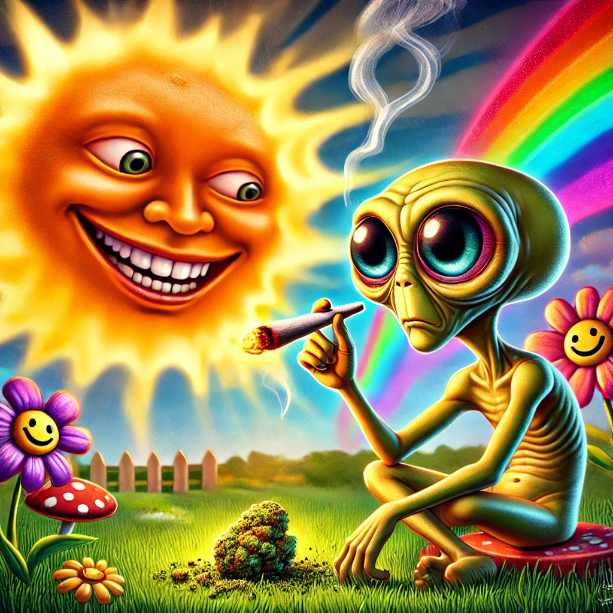

WARNING!!!
Getting stoned before reading on is not obligitory but it definetly helps get the giggles going, and for your sanitys sake.....are you really gonna risk it!!!
SPACE...R JOKES
Q: How many ears does Captain Kirk have?
"Three. A left ear, a right ear, and a final frontier!"
Q: What did Mister Spock find in the toilet?
"The captain's Log!!!"
"I’m reading a book about anti-gravity.. it’s impossible to put down!"
Q: What’s a light-year?
"The same as a regular year, but with less calories."
Q: What’s man's favourite Galaxy ?
"The MILFy way!"
"Einstein developed a theory about space or being spaced, and it was about time too!"
Q: What has the Starship Enterprise and toilet paper got in common…?
“They both circle Uranus looking for Klingons.”
STAR JOKES
Q: What does a star win in a competition?
"A constellation prize!"
Q: What kind of stars wear sunglasses?
"Movie stars!"
"Sirius, the dog star, is moving closer to Earth at a rate of nine miles per second. This means someday we could be in Sirius trouble!"
Q: Why did the star get arrested?
"Because it was a shooting star!"
Q: Why didn’t the Dog Star laugh at the joke?
"It was too Sirius!"
Q: Who here can tell me the distance from Betelgeuse to Procyon using a standard chart?
"...About an inch and a half..."
"ASTRONUT" JOKES
Q: Where does an astronaut dock his spacecraft?
"At a parking meteor!"
Q: What’s an astronaut’s favourite chocolate bar?
"A Mars Bar!"
Q: What happened to the astronaut who stepped on chewing gum?
"He got stuck in Orbit!"
Q: How does one astronaut on the moon tell another astronaut that he is sorry?
"He Apollo-gises...!"
Q: How do you get a baby astronaut to sleep?
"You rocket!"
Q: What do you call a crazy spaceman?
"An astro-nut!"
Vladimir Putin has boasted that Russia is planning to build a base on the moon. The idea is that astronauts will live there permanently. When they were asked if they really wanted to spend the rest of their lives in a barren, lifeless, empty landscape, the Russians said… “No. That’s why we want to go to the moon!”
Q: What do astronauts wear to keep warm?
"Apollo-neck sweaters!"
Q: How do spacemen pass the time on long trips?
"They play astronauts and crosses!
Q: Why is being an astronaut one of the most secure careers to have?
"Because even if you get fired you still get to keep your job!"
Q: What do the newspapers do when an astronaut dies?
"They publish an orbituary!"
Q: What’s an astronauts favourite beverage?
"Gravi-tea!"
ALIEN JOKES
Q: What do you call an alien with three eyes?
"An aliiien!"
Q:What do you do if you see an angry alien?
"Give it some space!"
Q. What should you do if you see a green alien?
"Wait until it’s ripe!"
If crop circles are real, does this mean that aliens have designs for our planet?
Q: What come from another world and are really slow?
"Snailiens!"
Q: What did the alien say to the garden?
"Take me to your weeder!"
Q: Why don’t aliens visit our solar system?
"Because they read the reviews and saw we only have one star!"
PLANET JOKES
Q: How does Jupiter hold up his trousers?
"With an asteroid belt!"
Scientists have discovered that the center of Jupiter contains the letter “i”
Q: What type of songs do the planets sing?
"Nep-tunes!"
Jupiter came down to Earth one day and helped these two criminals plan a bank robbery. Anyway, they both got caught and after the judge sentenced the two earthlings to fifteen years behind bars, Jupiter was a bit shocked to get arrested and handed a ten year stretch himself.“But your honour. I didn’t even take part in the robbery!” said Jupiter. “Yes” replied the judge. “But you did help them Planet!”
Q: What did Mars say to Saturn?
"Give me a ring sometime!"
The density of Saturn is so low that the whole planet would float on water, However, you wouldn’t want to try this experiment at home as it would leave a massive ring around the bath!!!
MOON JOKES
One kid asks the other, “Which is closer, Dublin or the Moon?" the second answers: “Duh! The Moon! You can’t see Dublin from here!"
Q: what do you call a tick on the moon?
"A luna-tick!"
Q: How do you know when the moon is going broke?
"When it’s down to its last quarter...aahhh.."
Q: What was the name of the first satellite to orbit the Earth?
"The Moon!"
Q: How does the Man in the Moon cut his hair?
"Eclipse it!"
Q: Did you hear about the bones they found on the moon?
It seems like the cow didn’t make it after all. "hey diddle diddle"
Q: Where do moon people go when they get married?
"They go on their honeyearth!"
Q: Why does a moon rock taste better than an Earth rock?
"It’s a little meteor!"
Q: Why couldn’t the astronaut book a room on the moon?
"Because it was full!"
Q: How is the moon like a dollar bill?
"They both have four quarters!"
Q: Why is the Moon bald?
"He has no ‘air!"
If your children seems a little obsessed over the moon, don’t worry. It’s probably only a phase.
SUN JOKES
Q: Why has Ms. Moon left Mr. Sun?
"Because he never wants to go out with her at night!"
"I was up all night wondering where the Sun had gone… then it dawned on me!"
Living on Earth might be expensive but at least you get a free trip around the Sun every year.
Copernicus’ parents might deserve some of the credit for his great discovery. Apparently, at the age of twelve, they said to him: “Copernicus, young man, when are you going to realize that the world does NOT revolve around you.”...So for anyone who didn't notice because they were stoned or a dumbass or whatever.....we already did star jokes...the sun is a star just closer......I was stoned when I noticed so I couldn't be arsed fixing it...
The Super Duper Nova
In the depths of the cosmos, so vast and bizarre,
Lived a giggling, shimmering, stoned little star.
With a joint in his glow and a twinkle of cheer,
He’d orbit too close to the galactic frontier.
He inhaled a great puff, oh, an intergalactic toke,
His nebula neighbors all started to choke!
A cough, then a hiccup, then—oh, what a sight—
He exploded in laughter and blinding white light!
The planets went spinning, the comets ran wild,
A supernova born from a star so reviled.
Now his ash scatters wide through the Milky Way’s dome,
Forever high, forever at home.
Composed by "Threeheads."